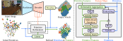

Feed-forward Likelihood Maximization for Efficient Indoor Occupancy Prediction

We propose a novel framework for occupancy prediction, Feed-forward Likelihood Maximization, that is able to train a neural network to dramatically relocate and deform primitives to model a scene. The resulting method, FLM-Occ, achieves significant performance improvement in both accuracy and efficiency on the Occ-ScanNet dataset.
Recent indoor occupancy prediction methods adopt Gaussian primitives as a sparse 3D representation for computational efficiency. However, their training relies on voxel classification, which imposes only local constraints and lacks global supervision on the distribution of the primitives. Therefore, they inevitably predict spurious primitives in empty regions, undermining both representational and computational efficiency. To address this, we propose Feed-forward Likelihood Maximization (FLM), a novel framework that reformulates occupancy prediction as voxel distribution estimation. In FLM, a network is trained to predict a mixture model that maximizes the likelihood over ground-truth occupied voxels in a feed-forward manner. To enable end-to-end training of networks and voxelization of a standard mixture model, we define mixture weights as normalized primitive volumes to implicitly enforce simplex constraints and derive novel voxelization formulas. Based on FLM, we present FLM-Occ, the first method capable of relocating primitives over long distances to model a scene. On Occ-ScanNet, FLM-Occ achieves superior accuracy using only 32 superquadrics, of the primitives of prior SoTA, while running faster.
Identifying the gradient vanishing issue that prevents previous methods from relocating geometric primitives over long-distance to model a scene.
Feed-forward Likelihood Maximization (FLM), a new framework for indoor occupancy prediction, that allows a neural network to learn substantial relocation and deformation of the primitives.
FLM-Occ, an indoor occupancy prediction method that achieves significant improvements in both accuracy and efficiency.
Method Overview

Qualitative Results


Quantitative Results
| Method | Primitive | Number | Avg. Mov. Dist. (m) | IoU (%) ↑ | mIoU (%) ↓ | FPS ↑ |
|---|---|---|---|---|---|---|
EmbodiedOcc | Gaussian | 16200 | 0.08 | 53.6 | 45.2 | 7.8 |
SplatSSC | Gaussian | 1200 | 0.15 | 62.8 | 51.8 | 8.7 |
Ours | Gaussian | 64 | 1.40 | 64.7 | 56.3 | 32.0 |
Ours | Superquadric | 32 | 1.32 | 65.3 | 55.9 | 32.1 |
Ours | Gaussian | 1024 | 1.25 | 71.2 | 63.6 | 23.6 |
Ours | Superquadric | 1024 | 1.20 | 71.7 | 64.0 | 25.4 |
BibTeX
@article{flmocc2026gcchen,
title={FLM-Occ: Feed-forward Likelihood Maximization for Efficient Indoor Occupancy Prediction},
author={Chen, Guangcheng and Fang, Lihuang and Tao, Huaqi and He, Yicheng and He, Li and Zhang, Hong},
journal={arXiv preprint arXiv:},
year={2026}
}